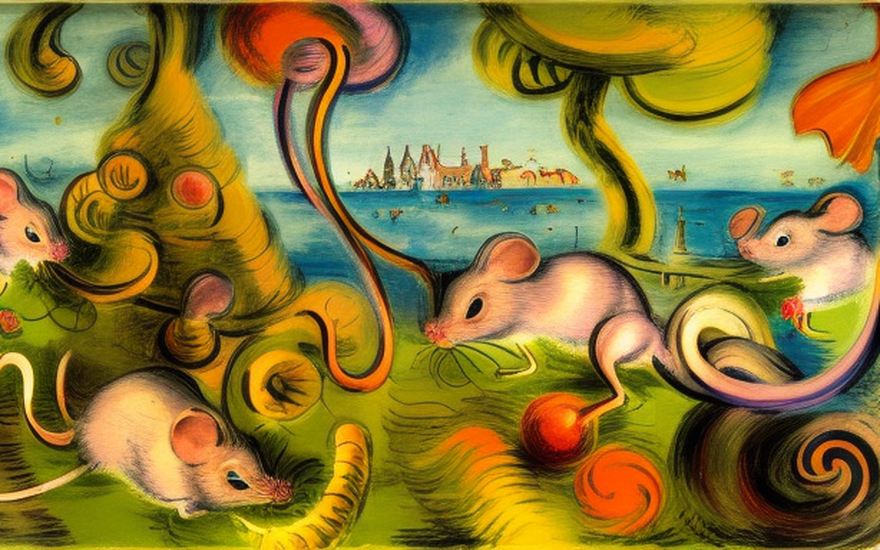
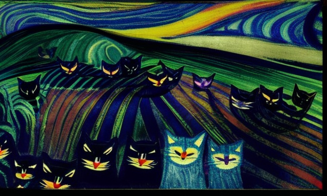
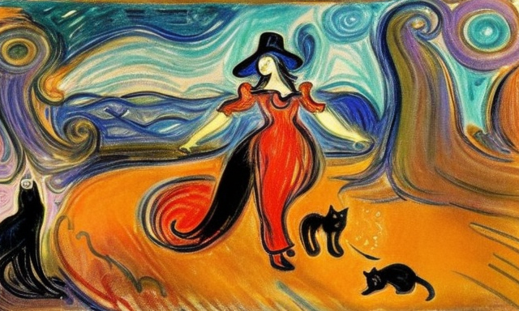

The rat hunter and the feline expert
HOME
Table of Contents
Rat hunter

It was a dark and stormy night in the year 1800, in the small village of Puddleton, England. The wind howled and the rain beat against the windows, making it impossible for anyone to sleep. But for me, Pieter the elder, the village’s resident rat catcher, the storm was not just a nuisance but a call to action.
You see, it was during nights like this that the rats would come out in droves, scurrying through the streets, overground and underground, spreading disease and destruction wherever they went. And it was my duty to rid the village of these pests.
I grabbed my trusty rat trap and lantern, and set out into the storm. As I walked the streets, I couldn’t help but feel like a hero, a brave warrior fighting against the tide of rodent invasions. But then, I heard a scratching noise coming from a nearby alleyway.
I peered into the darkness, and to my horror, I saw dozens of rats, all scurrying around in a chaotic frenzy. I knew I had to act fast, before they spread any further.
I set my trap and waited, watching as the rats took the bait and got caught in its jaws. But just as I thought I had won, a voice came from behind me.
“Pieter, I see you’ve caught yourself some rats. But what will you do with them?” I turned around to see the village’s mayor, Mr. Snodgrass, standing there with a look of amusement on his face.
“I’ll dispose of them, of course,” I replied, trying to maintain my heroic demeanor. “Ah, well then, I suppose that’ll have to do,” he said with a chuckle. “But I suggest you get some help, Pieter. You can’t be a one-man rat catching army forever.”
And with that, he walked away, leaving me alone with my captive rats. I couldn’t help but laugh at the absurdity of it all. But I knew that the battle was far from over, and that the rats would be back, stronger and more numerous than ever.
But I would be ready. I would not be defeated by a bunch of dirty, disease-ridden rodents.
Alliance with the cats

The next night, the storm had passed and the village was once again peaceful. But just as I was about to retire for the evening, I heard a commotion outside my door. I opened it to find a strange sight: a flock of cats, led by a large black and white tomcat, standing on my doorstep.
“What do you want?” I asked, confused by the sudden appearance of these felines. The tomcat stepped forward and spoke, “We have heard of your battle against the rats, Pieter the elder. And we wish to join your cause.”
I couldn’t believe my ears. Cats and rats had always been natural enemies, but these cats were offering to help me rid the village of the rodent pests. I was skeptical, but I couldn’t deny the appeal of having a horde of cats to assist me in my quest.
“Very well, I accept your help,” I said, and with that, the cats followed me into the streets of Puddleton. As we walked, I couldn’t help but notice the way the village folk looked at us with a mix of shock and amusement. I didn’t care, I had a mission to accomplish. And with my new feline allies, I was certain we could do it.
We prowled the streets, looking for any signs of rat activity. And soon enough, we found them. Huddled in a corner, a group of rats were devouring a loaf of bread. The cats wasted no time, pouncing on the unsuspecting rodents and catching them with ease. I couldn’t help but be impressed by the efficiency of my new allies.
As the night went on, we caught more and more rats, each time to the amazement of the village folk. And soon enough, word of our success had spread throughout Puddleton. People began to look at me with a newfound respect, and the mayor even offered me a raise in pay for my services.
But I knew that the war against the rats was far from over. They would continue to come, stronger and more numerous than ever. But I was no longer alone in my battle. For I had my loyal flock of cats by my side.
Village’s salvation

With my feline allies by my side, I was confident that we could keep the rats at bay. But I soon realized that these pests were not so easily defeated. They were cunning and determined, and they seemed to have a particular fondness for the cauldrons in which the village’s food was cooked.
Despite my best efforts, the rats kept sneaking into the cauldrons, contaminating the food and spreading disease. The villagers were outraged, and I knew that something had to be done.
That’s when I had an idea. If the rats were so fond of the cauldrons, why not use that to our advantage? I set up a trap, baiting it with a delicious mixture of cheese and bread. And sure enough, the rats came running, straight into the trap.
But my victory was short-lived, as the rats quickly realized what was happening and avoided the trap. I was at a loss, unsure of how to proceed.
That’s when one of my feline allies, a scrappy little tabby cat, came to me with a solution. “Pieter, the rats are smart, but we can be smarter. Let’s set up a decoy cauldron, filled with a mixture of cheese and bread, and leave it outside the village. The rats will be lured away from the real cauldrons, and we can catch them at our leisure.”
I was hesitant, but desperate for a solution. So I followed the tabby’s plan and set up the decoy cauldron. And to my surprise, it worked. The rats were lured away from the real cauldrons and straight into our trap.
The village was saved once more. But I knew that the rats would always be a constant threat, and that I would have to stay vigilant with my trusty feline allies by my side, to keep them at bay.
Encounter with the witch

As the days went by, my feline allies and I had been able to keep the rats at bay. But I knew that our victory was only temporary, and that the rats would eventually find a way to outsmart us. That’s when I decided to seek out a feline expert, someone who knew the best ways to train cats to catch rats.
And so, I set out on a journey to find the one person who could help me: a witch who was rumored to have a deep understanding of cats and their abilities.
After a long and treacherous journey, I finally found the witch. She lived in a small cottage nestled in the woods, surrounded by cats of all shapes and sizes.
“Welcome, Pieter the elder,” she said with a smile as I approached her cottage. “I have been expecting you. Come, let me show you how to train your feline allies to catch the rats.”
And with that, she led me into her cottage, where I spent the next few days learning the secrets of feline training. She taught me how to communicate with cats, how to use their natural instincts to our advantage, and how to keep them motivated to catch rats.
By the time I returned to Puddleton, my feline allies were experts at catching rats. They were faster, smarter and more efficient than ever before.
The rats were no match for my skilled feline warriors, and soon enough, they had been eradicated from the village. The villagers were overjoyed, and they hailed my success once more.
Village’s apology

With the rats finally gone and the village safe, I returned to my home in Puddleton, a hero in the eyes of the villagers. They thanked me for my services and offered me many gifts and rewards for my hard work. But there was one thing that I couldn’t help but notice the way the villagers talked about the witch who had helped me train my feline allies.
They spoke of her with fear and suspicion, as if she were some sort of evil sorcerer. And it made me realize that in the past, the villagers had not been so kind to witches. They had even burned some of them publicly.
I knew that this was not right, and that the witch who had helped me should be treated with the respect and gratitude that she deserved. So I decided to speak out on her behalf.
“My friends,” I said to the villagers. “We should not fear the witch who helped me. She is not an evil sorcerer, but a feline expert who knows how to train cats to catch rats. And without her help, we would not have been able to defeat the rats. We should be grateful for her assistance and treat her with the respect that she deserves.”
The villagers listened to my words and were ashamed of their past actions. The village elders even went so far as to publicly apologize for any past witch burnings they had participated in, and they vowed to treat feline experts with the respect they deserved. They apologized to the witch and begged for her forgiveness. And from that day forward, the witch was treated with the respect and gratitude that she deserved.
As for me, I continued to live in Puddleton, always ready to defend the village from the rats, with my feline allies by my side. And I knew that as long as I had their help, and the knowledge of the witch, I could handle whatever the rats threw at me.